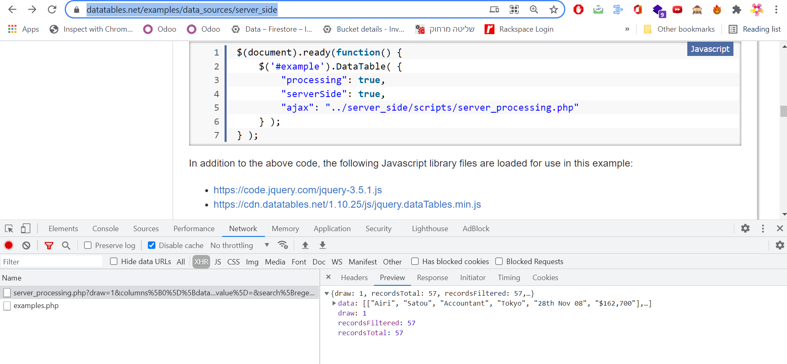

I'm trying to use https://datatables.net/
Currently we load all the table data in advance and do paging on the client side, which is obviously a bad idea, however I was not able to find a good example of how paging can be done on the server side.
Clearly, I should use ajax option but the documentation is very poor, see https://datatables.net/reference/option/ajax
It says the syntax is as follows:
$('#example').dataTable( {
"ajax": function (data, callback, settings) {
callback(
JSON.parse( localStorage.getItem('dataTablesData') )
);
}
} );
Callback function that must be executed when the required data has been obtained. That data should be passed into the callback as the only parameter
But what is the format of this only parameter??
I tried to pass an array (same array as I would pass data option) but I get:
datatables.bundle.min.js:1 Uncaught (in promise) TypeError: Cannot read property 'length' of undefined
at datatables.bundle.min.js:1
at E (datatables.bundle.min.js:1)
at PatientsSearchTable.dataFetcher (PatientSearchUIController.js:163)
at gA (datatables.bundle.min.js:1)
at pA (datatables.bundle.min.js:1)
at P (datatables.bundle.min.js:1)
at HTMLTableElement.<anonymous> (datatables.bundle.min.js:1)
at Function.each (jquery.min.js:2)
at w.fn.init.each (jquery.min.js:2)
at w.fn.init.o [as dataTable] (datatables.bundle.min.js:1)e.g. the code works with the following config
let config = {
data: [[1,2],[3,4]],
bDestroy: true,
columns: [
{ title: 'A' },
{ title: 'B' },
],
}
but the following gives the above error:
dataFetcher(data, callback, settings) {
callback([[1,2],[3,4]])
}
generateTableData(dataSet) {
let config = {
ajax: this.dataFetcher.bind(this),
bDestroy: true,
columns: [
{ title: 'A' },
{ title: 'B' },
],
}
EDIT: I was able to get the following to work
dataFetcher(data, callback, settings) {
let jData =[[1,2],[3,4]]
var dtData = {"data": jData}
callback(dtData)
}
generateTableData(dataSet) {
let config = {
ajax: this.dataFetcher.bind(this),
bDestroy: true,
columns: [
{ title: 'A' },
{ title: 'B' },
],
}
thanks to How to populate a JQuery datatable using AJAX option
NOTE: no need to stringify as in var dtData =JSON.stringify( {"data": jData});
But I still need the format of this only parameter, for example, how do I pass the number of result for the paging to show how many pages in total.
EDIT2:
I was able to get paging working as well:
dataFetcher(data, callback, settings) {
let jData = [[1, 2], [3, 4]]
var dtData = {
"data": jData,
"draw": 1,
"recordsTotal": 10,
"recordsFiltered": 10,
}
callback(dtData)
}
generateTableData(dataSet) {
let config = {
ajax: this.dataFetcher.bind(this),
bDestroy: true,
columns: [
{ title: 'A' },
{ title: 'B' },
],
pageLength: 2,
serverSide: true
}NOTE: you can see this data returned in the following example: https://datatables.net/examples/data_sources/server_side
When using the devTool as in: 
It may be useful to summarize the main points in one place, for future visitors to this question:
Server-Side Requests
When using serverSide: true, DataTables sends an Ajax request to your server.
This request is generated automatically by DataTables whenever a table re-draw takes place (and when the table is first initialized). The main actions causing a re-draw are:
There can be other triggers/events which also cause a redraw - but user-initiated sorting, filtering, and paging are the main ones.
The structure of that auto-generated Ajax request is described in the "Sent Parameters" section of this page.
This is how DataTables tells your server what sorting, filtering, or paging action just took place.
Your table will typically have a simple ajax section so DataTables knows where to send this request - for example:
ajax: {
url: "https://yoururl.com/endpoint",
type: "POST"
},
Server-Side Responses
Your server-side framework is responsible for processing the data in this request, and for building a response which represents the requested page of results, with the relevant filtering and sorting applied.
This is how server-side processing handles "large volume" data tables: It only ever needs to send back one page of results - maybe 100 records out of 1 million.
It also needs to send some additional data, so that DataTables can display the expected "page information", for example:
Showing 1 to 10 of 57 entries
The structure of the server's Ajax response is described in the "Returned data" section of this page. This includes recordsTotal and recordsFiltered values, as calculated by the server, as part of building its response data.
Any End-to-End Examples?
The DataTables documentation contains several examples here.
But these focus on the client-side (the DataTable itself).
There is a full (but basic) end-to-end example using PHP as the server-side framework. See the "server-side script" tab on this page.
This short PHP script, in turn, uses this:
require( 'ssp.class.php' );
You can find that additional PHP file on GitHub here. That file shows basic ways to handle sorting, filtering and paging.
If you are using a different server-side technology/framework, then your code will have its own implementation of these features.
What about that Ajax "callback" issue?
The question asks about this:
$('#example').dataTable( {
"ajax": function (data, callback, settings) {
callback(
JSON.parse( localStorage.getItem('dataTablesData') )
);
}
} );
This is one of several variations on how a DataTables Ajax call can be defined. This specific variant is (in my experience) far less commonly used/needed.
Normally, you may only need something like this:
ajax: {
url: "https://yoururl.com/endpoint",
type: "POST"
},
But with the callback approach, you can implement any function you wish to return data from your Ajax call. In the above "callback" example, instead of making an HTTP request to some external service such as a web site or REST endpoint, the example pulls its "response" data from the browser's local storage.
This example assumes something has, of course, already put that data into local storage - and it assumes that data already has the correct format for a server-side response (without actually being a true server-side response).
It's basically how you can "fake" an Ajax request without needing to make an Ajax call.
I would not disagree that the wording in the documentation could be a lot clearer, here.
| The callback approach is necessary when you need to send a specific AJAX request that depends on different data in the page (e.g. advance search) - Elia Weiss 14 Jun 2021 at 09:21 | |
| the question is specifically on the format of the callback parameter, although this answer give reference to the correct documentation, it might be hard to find, thus you can find it here: datatables.net/manual/server-side - Elia Weiss 14 Jun 2021 at 09:24 |
The question is What is the format of this parameter?
The Answer is here in the documentation for the Returned data
https://datatables.net/manual/server-side
NOTE: I repost the answer which was deleted by @BhargavRao, not sure why since it is the answer to the question, hopefully he will not delete it again.
{kind=link}
{kind=link}
recordsTotalfield in the returned data. (Side note: There is no specific reason why you need to be using thecallbackvariant of the DataTablesajaxcall. You can (typically) just use the plain version of the call.) - andrewJames 13 Jun 2021 at 13:36